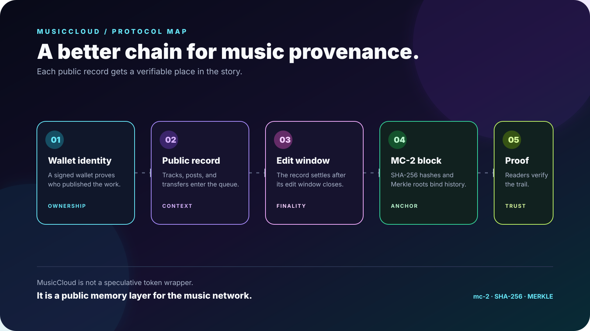
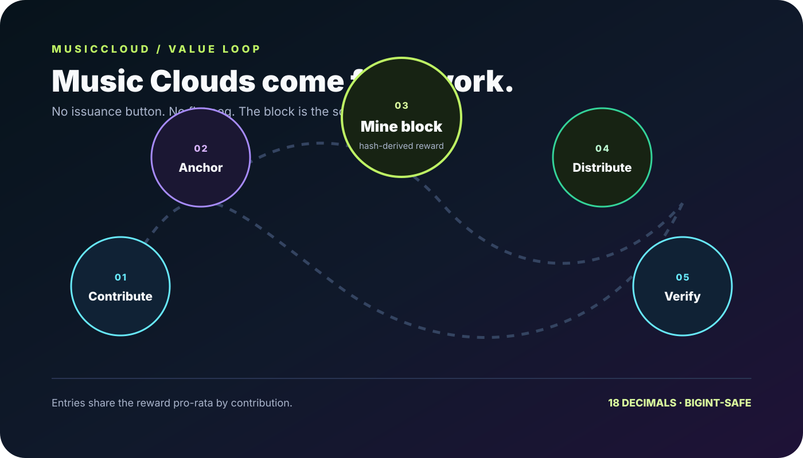
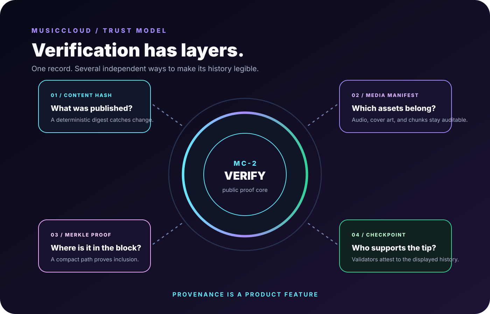

01 / IDENTITY
Start with a wallet
A wallet signature proves account ownership without putting a password or email in the middle of the relationship.
MusicCloud turns public tracks, posts, and native transfers into a readable, verifiable record—so the path from artist to listener to collector stays legible.

The chain is designed around the moments that matter to a music platform: who made the record, what changed, where it settled, and who helped create the value.
A wallet signature proves account ownership without putting a password or email in the middle of the relationship.
Eligible tracks, posts, revisions, and Music Cloud transfers enter the public ledger with their content commitments.
Blocks, hashes, manifests, and proofs give artists, listeners, and collectors a common source of truth.

The chain does not ask people to trust a dashboard label. It exposes the ingredients needed to verify the record and understand what each layer means.

Music Clouds are not issued by a generic mint endpoint or pegged to fiat. The supply comes from chain-block work and is distributed to contributing authors.
Music Clouds are produced by the chain’s block process, then shared pro-rata with the authors whose records made that block possible.
There is no generic mint button or speculative wrapper. The block is the source of the native economy.
Reward distribution follows the anchored contribution trail instead of disappearing behind a black-box balance.
The goal is not to hide complexity. It is to give every participant the right amount of context, from a one-click proof link to the full block and reward trail.
Publish with a visible provenance path that can outlive a feed ranking or a platform moment.
See what a proof means, what is anchored, and how public work contributes to the network.
Move from a collectible or profile surface to the underlying record without needing source-code access.